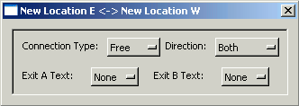

Interactive
Fiction Mapper (IFMapper)
by Gonzalo Garramuño
User's Manual
What are Interactive Fiction Games?
These are adventure games, which usually contain little or no graphics but
use prose to describe locations, events and, hopefully, a good story. The
first interactive fiction game was created in the late 1970s and was known as
Adventure (or. Colossal Cave), albeit the genre became widely popular and
developed most of its conventions with the creation of Infocom in the 1980s.
If you have never played an interactive fiction game, perhaps the best
comparison is that they are a grown-up version of "Dungeons and Dragons" or the
"Choose Your Own Adventure" series of children's books.
Still, just like any good novel, interactive fiction has evolved into all sorts
of different styles, genres, and level of interactivity. And you can find
adventures being developed today in a lot of languages like English, Spanish,
Italian, German, etc. See the section: "I am new to Interactive
Fiction. What games would you recommend?"
What is IFMapper?
IFMapper is a tool for easily mapping these interactive fiction games. As
these games rely mainly on text descriptions and often use compass directions
for navigation around the game world, it is relatively easy to get lost.
In the old days, players would use grid paper to draw their maps, using boxes
and lines to show each location and its exits. IFMapper is basically, the
21st century version of that old practice.
Albeit IFMapper is mainly a mapping tool, it can also be used as a design tool
in the early stages of development of new games (for either Inform6 or TADS3).
In order to use IFMapper, you need to have the Ruby scripting language
installed and FXRuby. IFMapper was originally developed to run under
ruby1.8 and FXRuby1.2, but it will probably be compatible with later versions,
too.
To print PDF documents, you will also need Austin Ziegler's PDF::Writer module.
If your platform is Windows, your best bet is to download the One-Click Ruby
Installer from:
http://rubyforge.org/projects/rubyinstaller/
This installer comes with the latest stable ruby version and also with the latest fxruby. It also comes with rubygems (see rubygems later).
If your platform is Linux or OSX, you may need to obtain ruby from your repositories.
For example on Ubuntu:
$ sudo apt-get install rubyOSX currently comes with ruby pre-installed, which although it is a tad old will work fine for IFMapper.
After you have ruby up and running, you should then proceed to install Fox and FXruby. You can do this by first installing rubygems (what I'd recomment) or by not using it. If you want to use rubygems, proceed to the "Using Rubygems" section.
FXRuby can be found at:
http://www.fxruby.org
After you have fxruby (which requires the Fox toolkit) installed, you should then be able to install ifmapper.
After you have ruby and fxruby properly installed, download the ifmapper zip file from:
http://rubyforge.org/projects/ifmapper
Use unzip, winzip or some other zip decompression tool to open the archive. All files will be placed inside an IFmapper directory. You should be ready to start IFMapper.
If you want to output PDF files from IFMapper, you will also need to install the PDF::Writer library. You can do so using rubygems or by downloading the PDF::Writer library from:
http://rubyforge.org/projects/ruby-pdf/
Installing or Upgrading using rubygems
Rubygems is a manager of ruby libraries that should help with automatically installing any library dependencies that ifmapper may need. Rubygems comes pre-installed with the One-Click Installer for Windows. For other platforms, you can obtain it from:
http://rubyforge.org/projects/rubygems/
Once rubygems is installed, you can then open a windows console or a shell window and do:
> gem install -r ifmapper
This will download the latest version of ifmapper, as well as all the libraries needed for ifmapper to run (in case they are not installed on your system). If you don't have fxruby installed, it will get installed for you. On Unix systems, you will probably still need to compile it yourself.
IFmapper (and other libraries) will then be placed inside your ruby install
directory, like:
C:/ruby/lib/ruby/gems/1.8/gems/ifmapper-{VERSION}
Once installed, you can then run IFMapper by either clicking on the IFMapper.rbw file inside the ifmapper directory or, invoking IFMapper.rbw from any shell or console.
Assuming everything is installed properly, you should then see the IFMapper window popup with an empty map.
The IFMapper interface consists of a menu that allows you to access common operations (open/save maps, change settings, etc), a toolbar with a similar functionality, and one or more windows displaying a map canvas.
IFMapper allows you to edit multiple maps simultaneously.
Each map can have multiple "sections", so as to keep different parts of the
games organized. Note that these sections have nothing to do with how printing
is done and two or more sections could end up being printed
together in a page or a single section may end up getting split into a multiple
page document once printed.
When you start IFMapper for the first time, you should be placed in an empty
map that shows a grid of where rooms and straight connections can be placed.
Use your mouse for navigation. If your mouse supports a mousewheel, this can
be used for zooming in or out of the map easily.
To pan around the map, use the Middle Mouse Button or, alternatively,
ALT + Left Mouse Button (These hotkeys mimic the behavior of Maya and 3dmax,
both popular 3d packages). You can also scroll the map using the
scrollbars around the canvas.
Creating Locations

You create new Locations or Rooms in the map by just clicking on any
of those template boxes. The new location will then be given a default name and
settings ('New Location').
Each room added will automatically receive a number, based on creation order.
To modify the name and settings of a location, you can then double click on it
and a requester will pop up allowing you to do so.
If you want the requester to pop up as soon as a new room is created, you can
turn on Map->Options->Edit on Creation.
This requester also has options to allow you to mark the room as in darkness and
to add a list of objects present in the room.
As you play the game, you can also choose to list the tasks that you need to do
in the room to progress further (providing you some with a rudimentary walkthru/hint
functionality).
This requester can be left open so as to quickly change from room to room.
Besides using the mouse, you can also use the numeric keypad with Num Lock on
and use the numbers from 1 to 9 to create a new room in the appropiate
direction.
You can then create connections among rooms by clicking on the non-boxed
areas of the map. Depending on where exactly you click, a simple connection will
be made between two rooms.
In its default configuration, you can also click to create a connection on an
area where no rooms yet exist. IFMapper will then create the missing rooms
automatically for you, in addition to the connection.
Note that you can change the behavior of how nodes and connections are created
from the Map->Options menu:
Automatic Connection - will create a connection to the previous room for
each new room you create.
Create on Connection - will allow you to add both the connection and the
missing rooms when you click on some connection area in the map.

Connections can also be modified similarly to rooms, by clicking twice on them.
The connection requester allows you to specify the connection as a free, door,
locked or special connection. It also allows you to make the connection
travel in a single direction or in both directions. Finally, you can also
add text to the connections to indicate that connection takes you Up/Down or In/Out.
Changing the connection to be one way can also be done by just
be one way can also be done by just
clicking on them several times, without opening the requester.
Finally, selecting a connection and using the right mouse button gives you
access to a context-sensitive menu that allows you to flip the direction of a
connection or to shift the connection to some other exit in the room.
Deleting Rooms or Connections
To remove a room or connection, just select it by clicking on it with
the left mouse button. Then, press the Delete or Backspace key.
Note that there is currently no Undo, so deleted nodes or connections
cannot be restored.
Complex Connections
A lot of text adventures have mazes with exits that lead nowhere and exits that
change direction from one room to the next. We refer to these as complex
connections.
To create a complex connection, type the letter 'x' or use the Edit->Add
Complex Connection menu option. Afterwards, click on the exit next to the
first room you want to connect and then click on
the exit of the second room.
If you want to get out of the add complex connection mode, just hit Esc at any
time.
IFMapper will then try to calculate a path along the map to take you from your
first room to the second one.
For a complex connection to happen, the path between those nodes has to be
'free' of other rooms. IFMapper will also try to avoid inter-crossing
connections as much as it can, but will still allow them.
To create exits that just loop onto themselves, you can do a complex connection
by clicking twice on the same exit or, you can just use CTRL + Left Mouse
Button without needing to go into the Complex Connection mode.
Moving Rooms in Map
When building large maps on complex games, you will probably run into the need
to shift nodes around. To do so, select on the nodes you want to move by CTRL-LMB
on them, and then use the arrow keys to shift the nodes one grid unit at a
time.
You can also use SHIFT-LMB to drag a box around the rooms to select.
If there are any simple or complex connections, IFMapper will keep recalculating
those connections on the fly as you move the nodes.
Note that complex connections can sometimes 'fail'. In those cases, you will see
the complex connection become taut and tinted red.
Dealing with Multiple Sections
Some adventure games can be rather large and might be split into chapters. In those cases, you may want to take advantage of using multiple sections in your map. This will keep your map organized and may help you with printing them also later on.
You can create and delete sections from the menu, in Map->Sections->Create Section and Map->Sections->Delete Section.
To move from one section to another, you can use the Arrows located in the right section of the toolbar or Map->Sections->Next/Previous Section.
Searching
You can search for words in locations, objects, tasks or descriptions in the
current section or in the whole map, using regular expressions.
The search is interactive, a la Emacs, meaning that as you type, the rooms that
match the search get hilited.
The number of matches for the map and the section is display in the status bar.
You can use the Next/Previous button to keep centering your view on each match (and
automatically moving thru sections if you are matching stuff in the whole map)
Preferences
IFMapper allows you to change and set preferences on a per map basis (colors,
editing options, etc). You can also save your preferences so that IFMapper will
boot with those settings in place for creating new maps.
Saving and Loading Maps
To save a map you are editing, you can go to File->Save or File->Save
As. The internal format of IFMapper's maps is the .map format, which
is binary format. This format saves all your map preferences as well as
all the connections and descriptions.
To load a map, you can then use File->Open. Besides IFMapper's own
.map format, IFMapper also supports other popular formats within the IF
community. IFMapper can read:
- .ifm files (Dave Chapeski's IFM, a popular free Unix mapping/walkthru tool)
- .gmp file (GUEmap's maps, a commercial mapping tool for Windows)
- .inf files (Inform6 source code files)
- .inform files (Inform7 source code files)
- .trizbort files (Trizbort map files)
- .t3m or .t files ( TADS3 makefiles or source code files )
Locking Maps
Once you finish an adventure game, you can then lock the map for distribution.
You can do so by going into Map->Map Information and click on the Read-Only
switch and making sure you save the map as .map file (IFMapper's native format).
Making the map read-only will not allow you to modify the map anymore (and thus
will prevent accidentally moving or changing room descriptions by
mistake).
When reading any IFM file, Read-Only mode is entered automatically, as it is
assumed these maps were created and finished elsewhere. If you need
to modify them, just untick the Read-Only switch in the Map Information box
again.
Mapping Games from
Transcripts (Automapping)
New to v0.8, the feature of automapping was added. The way automapping works is
that it will read a transcript or log of your game, and will attempt to parse it
to generate rooms and connections (even while you are playing it!).
To use automapping, go to your game and start a transcript. Usually this is done
by doing:
> verbose
> script
and then specifying the name of the file.
Then, go to IFMapper and go to a map (usually an empty one) and do:
Map->Automap->Start. This will pop up a file requester for you to feed
IFMapper the name of the transcript.
Then, you will be asked thru a requester to select some options.
The options include how will the automapper identify locations as being unique.
The automapper can determine whether you are in a new location by comparing the
room description (the default) or by comparing just the short name of the room.
Games that have rooms with the same short names (usually, mazes) will benefit
from being identified by the room description while games that often change the
room description on several visits to it might be mapped better using just short
names. Note that you can also switch from one method to another at any
time later on.
Another option allows you to specify what type of transcript you are dealing
with. Most games use the "Classic" format, albeit some old Infocom games (mainly
Witness and Moonmist) used a tad different format.
And voila. Immediately, you should see IFMapper get to work and start creating
locations and connections.
If you continue playing your game and the 'script' command is still in operation,
IFMapper will try to interactively map your game. This works very well for games
running under WinFrotz, for example, albeit some other interpreters might not
append text to transcripts as soon as you run a command, leading to a less
interactive automapping (you'll probably have to type several commands before
the interpreter will update the transcript file).
Besides trying to parse for locations and movements, automapper will also try to
parse for objects in the room, by monitoring your 'get' or 'take' commands and
remembering where each object was first found, so as to add it to the appropiate
room.
Note that, at any point during your mapping, you can pop up the automapper
properties again to switch from automapping using descriptions to using short
names.
How
does the automapper distinguish locations?
As we said before, the automapper will parse all the game text, looking for room
descriptions. Not just the replies to moving commands.
This is done so that teleporting commands (such as magical words) or special
events that take you other places will work.
Room locations are determined by finding the room's short name: a string of text
where all of its words of 4 or more letters are capitalized (or where the string
follows the format specified, in case of Witness/Moonmist format).
The paragraph following that is assumed to be a room description.
Depending on your automapper settings, the automapper will give preference to
the room description or to the room's short name to determine whether a certain
room has already been visited.
Limitations on
Automapping
Albeit automapping is very cool and powerful, there are some limitations on it
you should be aware of.
First, it only works with games written in English.
Second, you should try to use automapping with verbose mode. Automapping will
try to rely on the room description to distinguish one room from the next,
instead of just the room's short name.
If your game is in brief or normal mode, automapping could end up getting
confused about interpreting a previously visited location as a new location, as
it could interpret an object or a character description as part of the
room description.
Even with full verbose mode, automapping may get confused if the
description changes dramatically (like the demolished house in Hitchhiker's
Guide to the Galaxy).
Automapping also may not help much when it comes to mazes, where all their
descriptions are identical or in cases where exits are chosen at random (Adventure/Colossal
Cave).
Some games don't follow the Infocom standard of labelling locations using a
short capitalized description (for example, FailSafe). These games cannot be
automapped.
Finally, the layout algorithm used in the automapper is not exceptional and it
can lead to maps with intercrossings or with rooms placed too far apart.
Remember, thou, that you can still help the automapper by manually moving or
removing rooms at any time if you are interactively automapping a transcript.
If for some reason the automapper does not detect a room automatically, you can
also at any time create that room yourself and from then on, the automapper will
be aware of it.
Creating a new
Inform/TADS3 game
IFMapper now allows you to also spit out Inform or TADS3 source code for a map.
This means you can now use IFMapper to easily create the basic skeleton for a
new game from scratch.
With IFMapper, you can place your objects, your NPCs and locations with their
doors/exits in your game. You can also type in your descriptions for each
location.
To do this, make sure to activate the display of room descriptions:
Map->Display->Location Description
You can then type in all your room descriptions and objects manually and then,
once your map is finished, use:
File->Export->Export to Inform
File->Export->Export to TADS3
These option will create a set of Inform or TADS3 source files (one per map
section), which you can then immediately compile and play with.
Obviously, for a real game, the .inf or .t files you get out of IFMapper are
just a skeleton, as you will still have to code manually all the logic in your
game.
I am
new to Interactive Fiction. What games would you recommend?
If you can get a copy of it (Lost Treasures of Infocom or similar), I think
Wishbringer from Infocom is probably one of the nicest introductory games.
Its puzzles are not that tricky and are also pretty logical.
Once you master it, you could then try Planetfall, which has one of the most
lovable characters in any adventure game.
Assuming you cannot get hold of those Infocom games, Emily Short's City of
Secrets is a very nice introductory game and probably one of the most polished
adventures I have seen.
Andrew Plotkin's Dreamholder is also somewhat a nice introductory game as the
game will help you with your commands a little as you begin. Note, however, that
the game's puzzles are anything but easy.
Contacting the Author
Currently, I can be reached at:
ggarra13 AT domain
(Where "domain" is gmail.com )